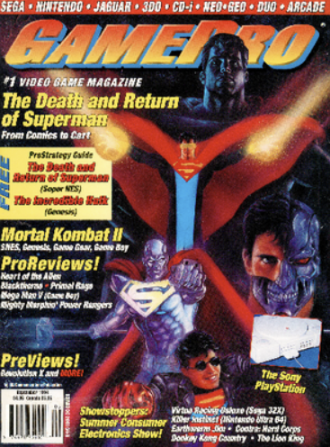

GamePro Issue 62 is a video game magazine published in September 1994. The digitized magazine is preserved by the Video Game History Foundation Digital Archive. It represents gaming culture during the 1990s and provides evidence of how video games were advertised, reviewed, discussed, and presented to gaming audiences.
Video game magazines are useful cultural objects because they document more than individual games. They also show the language, visual styles, marketing strategies, technologies, and communities surrounding gaming during a particular historical period.